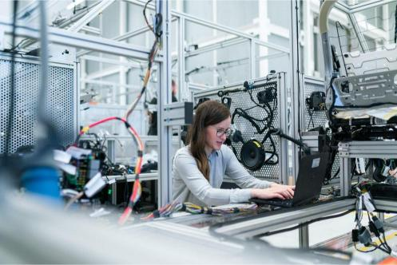

Plan académico
Mapa curricular.
Plan de estudios de ocho semestres con 164 créditos.
Plan de estudios
El plan de estudios del Doctorado en Ciencias de la Ingeniería está estructurado en ocho semestres, con un total de 164 créditos, y se centra principalmente en el desarrollo progresivo de un proyecto de investigación doctoral. Desde el primer semestre, el estudiante inicia con un seminario de investigación, seguido por una secuencia continua de proyectos de investigación (I a V) que permiten la consolidación de su trabajo científico hasta culminar en la tesis doctoral.
A lo largo del programa se incluyen elementos clave de evaluación y formación académica, como el examen predoctoral, que aseguran el avance y la calidad del proyecto de investigación. Asimismo, se contemplan actividades complementarias, estancias académicas y asignaturas optativas, las cuales, aunque no siempre otorgan créditos, fortalecen la formación integral del estudiante de acuerdo con sus necesidades específicas y su línea de investigación.
En conjunto, el programa tiene un enfoque flexible y orientado a la investigación, donde el acompañamiento del director de tesis y el seguimiento del claustro doctoral son fundamentales para garantizar la pertinencia, calidad y viabilidad del trabajo, culminando con la defensa y aprobación de la tesis como requisito para la obtención del grado.
| Etapa | Contenido | Finalidad |
|---|---|---|
| Inicio | Seminario de investigación | Definir bases del proyecto doctoral. |
| Desarrollo | Proyectos de investigación I a V | Consolidar avance científico y tecnológico. |
| Evaluación | Examen predoctoral | Asegurar calidad y avance del proyecto. |
| Cierre | Tesis doctoral | Presentar contribución original. |